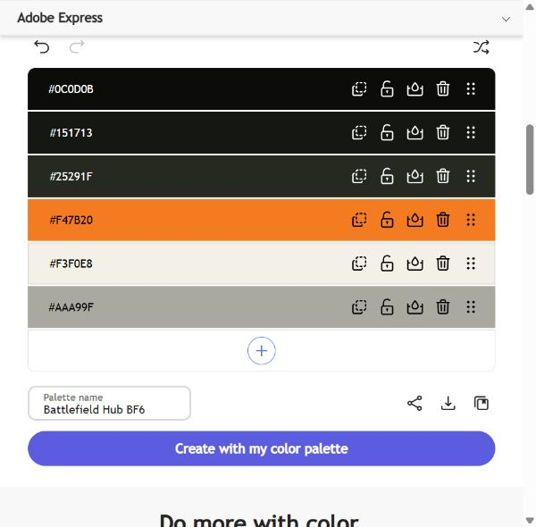

01 / STRUKTUR
Wireframe
Forsiden gir en kort introduksjon. Menyen fører videre til informasjon om spillet, historikken og prosjektet. På mobil flyttes innholdet under hverandre.
Kort introduksjon + bakgrunnsbilde
UTFORSK LES MERNyheter
Overskrift
Kort tekstBilde
Overskrift
Kort tekstBilde
Overskrift
Kort tekst
Introduksjon + bilde
UTFORSKNyheter
Kort introduksjon
HISTORIEN + KILDE
Møt personene
02 / STEMNING
Moodboard
Militærutstyr, mørke omgivelser og samarbeid er utgangspunktet. Bildene gir siden et alvorlig preg. Den oransje aksentfargen er valgt for å gjøre knapper og viktige detaljer synlige mot den mørke bakgrunnen.


Bilder: EA / Battlefield, offisiell kampanjeside. Lest 20. oktober 2026. Direkte bildelenker finnes i kilder.md.
03 / FARGER
Fargepalett
Paletten viser fargene som allerede brukes i CSS. De passer til stemningen i bildene, men er manuelt valgt og ikke hentet automatisk fra bildet.
Bakgrunn
Kort og flater
Militærgrønn
Knapper og detaljer
Hovedtekst
Sekundær tekst
Lys tekst gjør det lettere å lese på de mørke flatene. Oransje brukes i mindre mengder for å trekke oppmerksomheten mot lenker og knapper.
De seks fargene er også lagt inn som en egendefinert palett i Adobe Color, med navnet «Battlefield Hub BF6». Paletten er eksportert direkte fra Adobe Color 20. oktober 2026.
Last ned Adobe Color-paletten (.ase), eller bruk ACO-versjonen (.aco). Importer filen i Photoshop via panelet Fargeprøver / Swatches → Importer fargeprøver.

04 / TYPOGRAFI
Valg av font
Nettsiden bruker Segoe UI, med Arial og sans-serif som alternativer. Segoe UI finnes på Windows og har enkle bokstavformer som passer til menyer og lengre tekst. Hvis den ikke finnes på enheten, velger nettleseren neste font i listen.
Store slagmarker. Tydelig lagspill.
Battlefield 6 kombinerer kjøretøy, infanteri og samarbeid.
Æ Ø Å æ ø å · 0123456789
Overskriftene bruker fet skrift. På de store sidetitlene brukes også kursiv for å gi et mer actionpreget uttrykk. Brødteksten har vanlig skriftvekt og linjeavstand på 1,6–1,75, slik at den er lettere å lese.
Fontlisten i CSS: font-family: "Segoe UI", Arial, sans-serif;. Logoen bruker fet Arial for et enkelt og kompakt uttrykk.